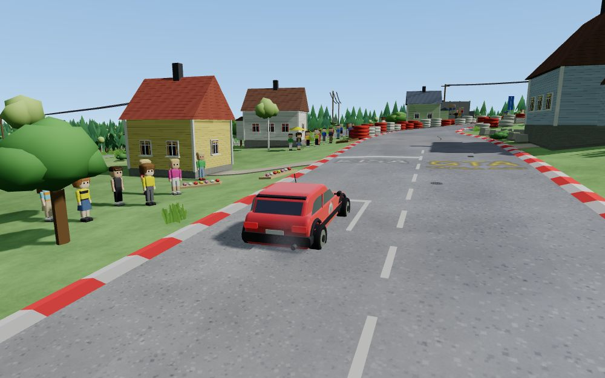
Puhelimella ei pääse ajamaan – peli tarvitsee näppäimistön ja tietokoneen näytönohjaimen. Avaa tämä osoite koneella:
suomiralli.netlify.appOikea tieverkko ja 1990-luvun talot kartalta, mäet ja metsät, satoja kyläläisiä – ja kaikki reagoi siihen, miten ajat.
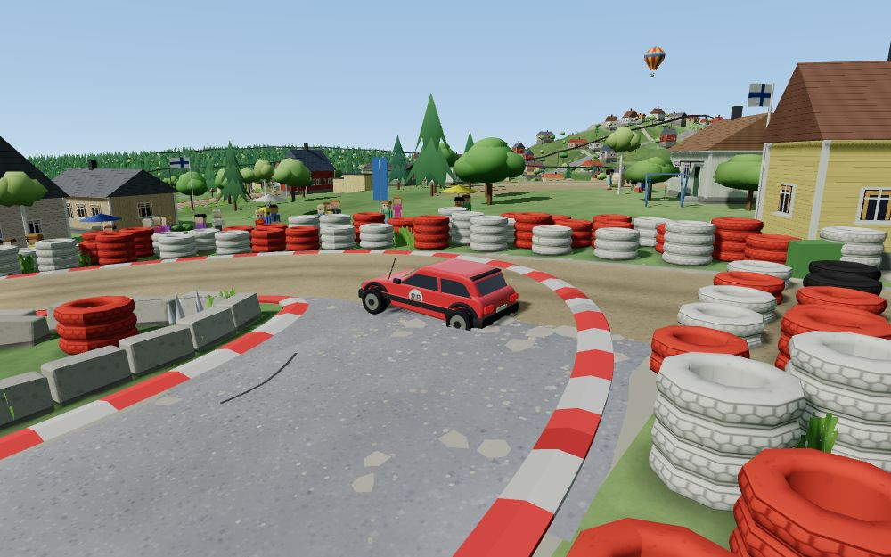
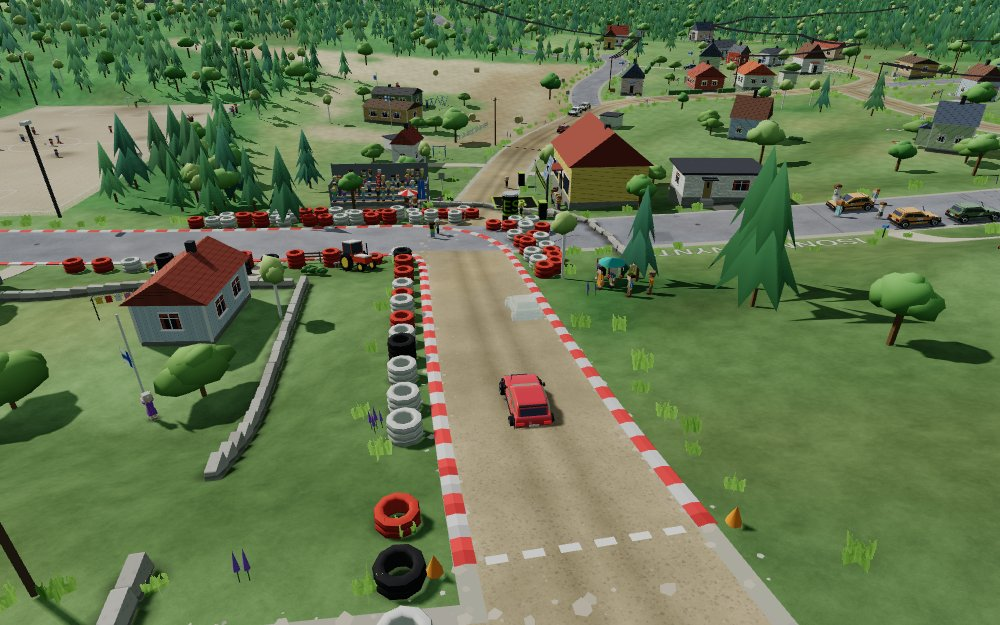
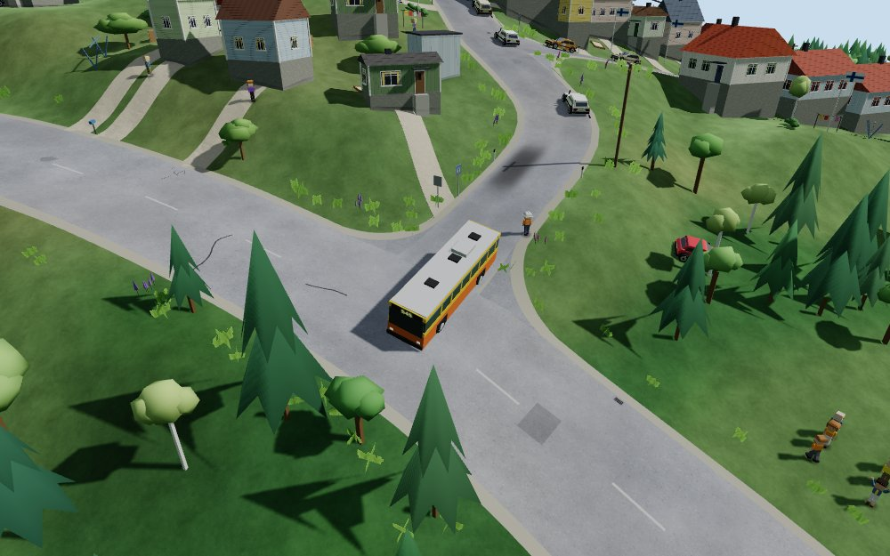
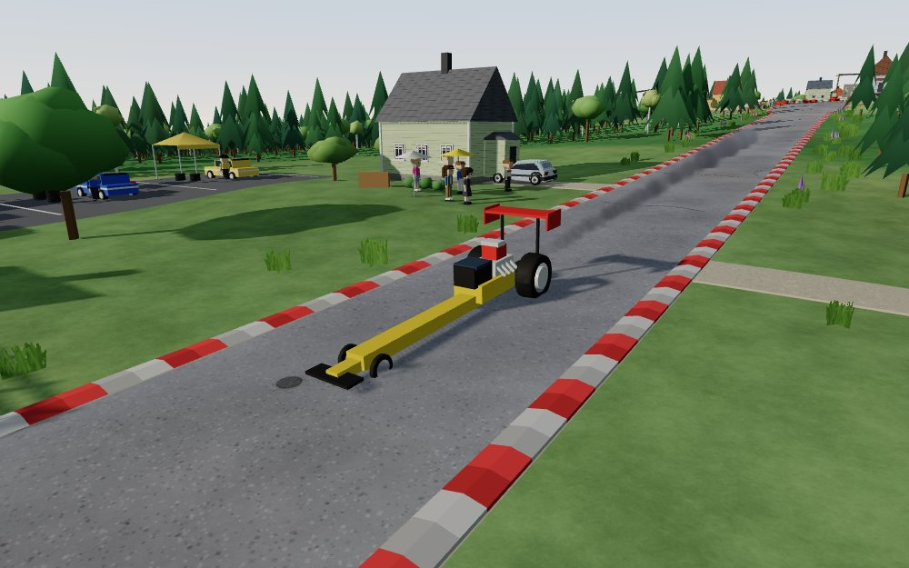
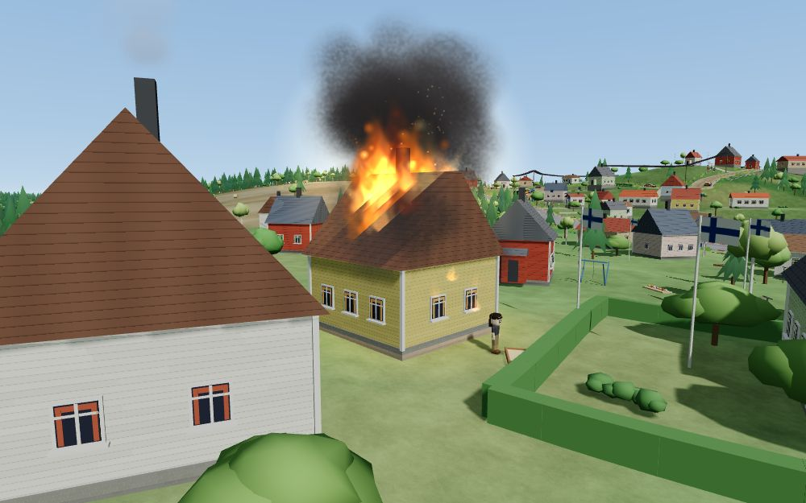
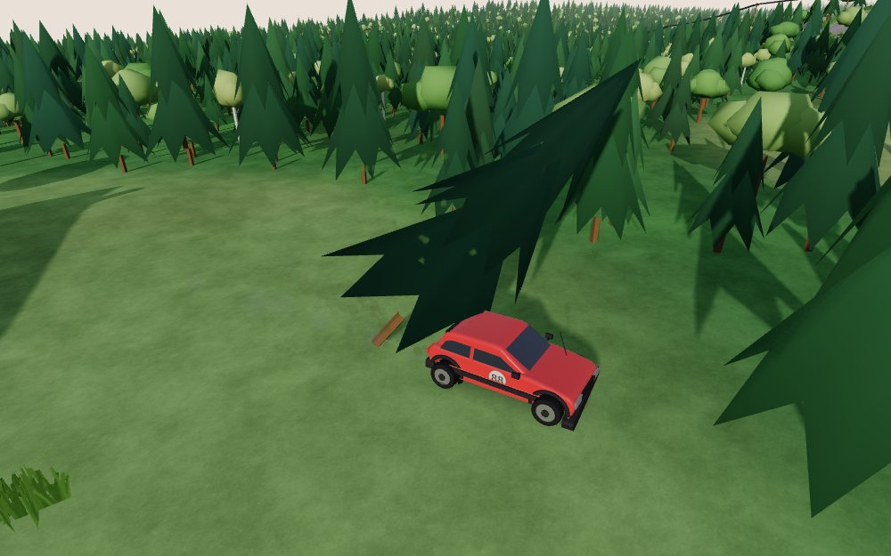
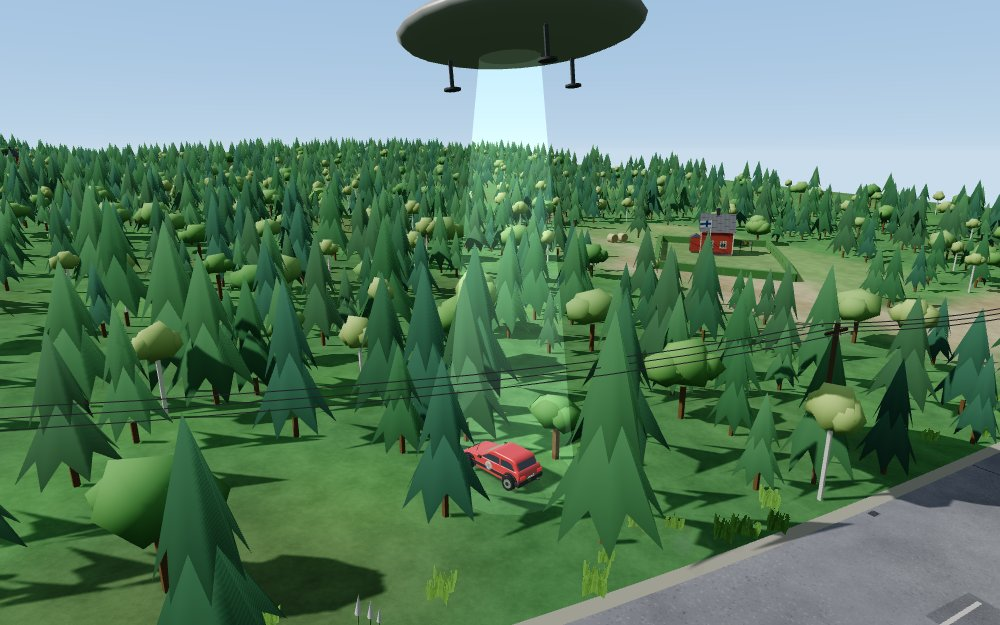
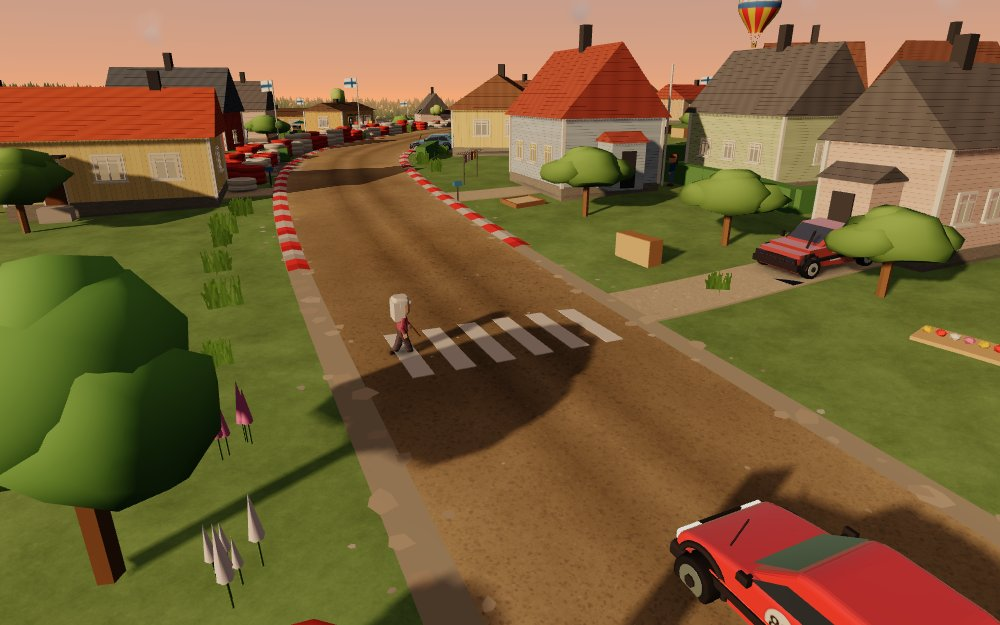
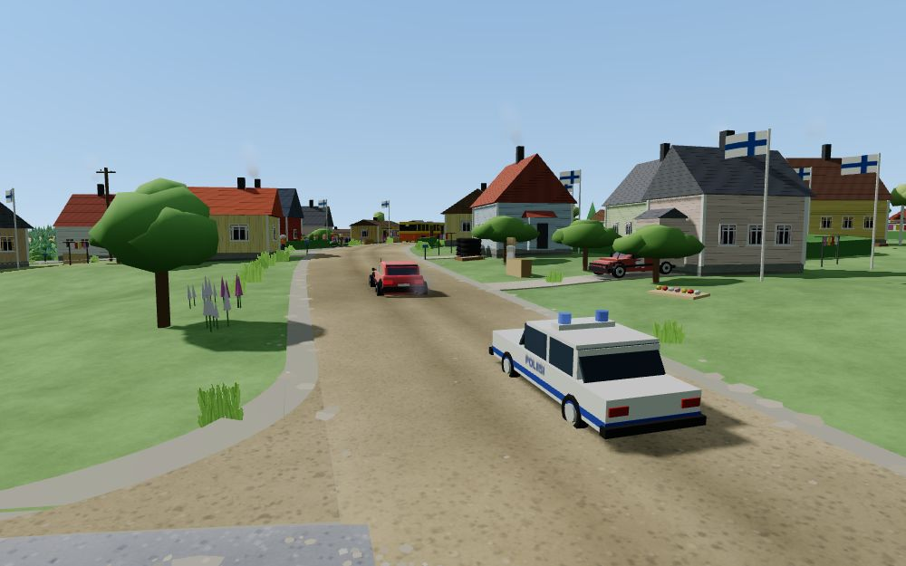
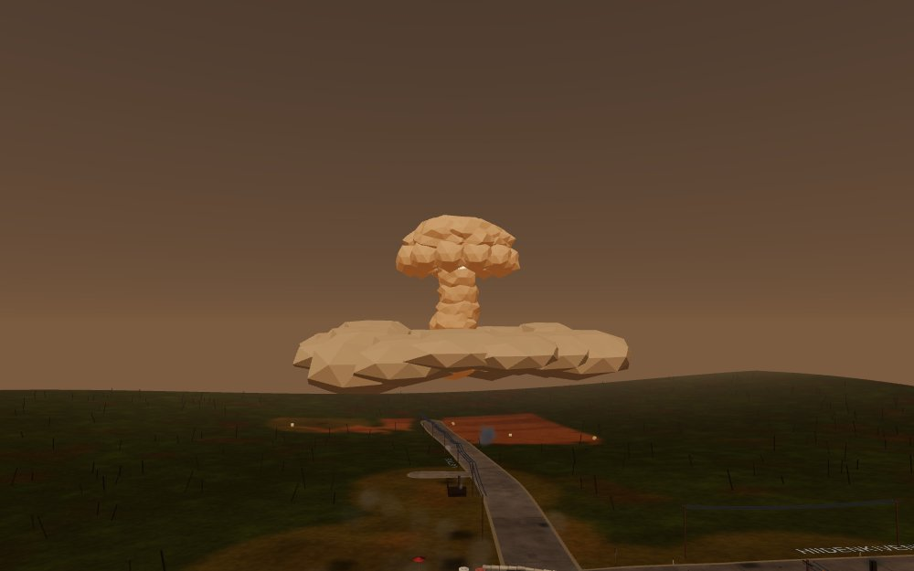
Pelin radio: kylän omat biisit, urheilua, merisää ja puheohjelmat. Paina ▶.
Kaikki pelin tapahtumat lehtenä – poliisin rekisteri, ufot, dragsteri ja Marjatan keittiö.
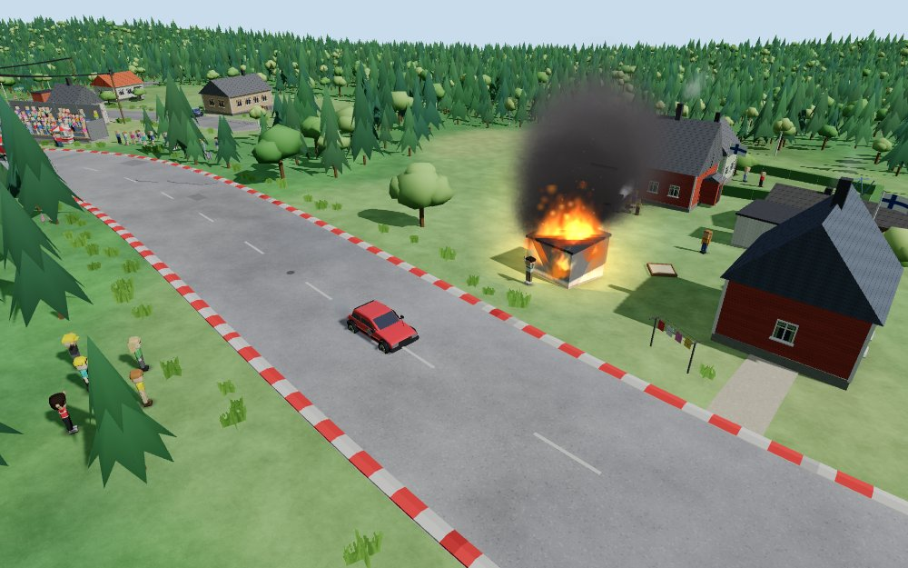
Kuskit ympäri Suomea ajavat parhaillaan.